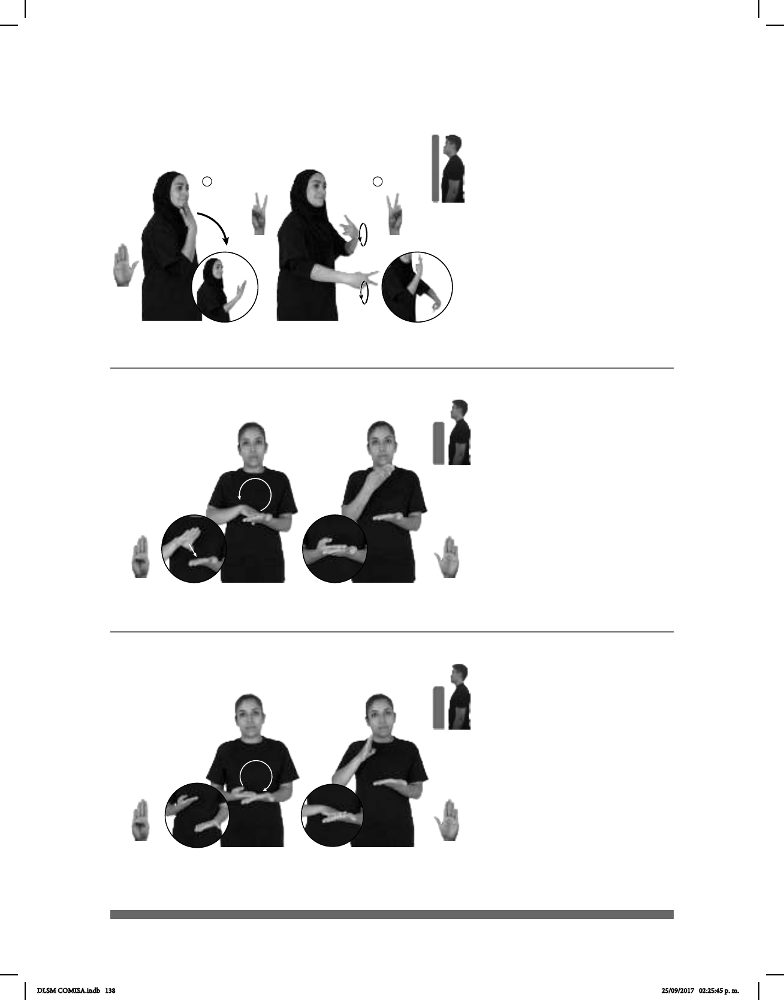

138
(B-P 82)
BIENVENIDO pos-MI CASA
Bienvenido a mi casa.
Seña: SC: I. SM; II. SB
I. B-P.2; II. MD y MB
2.2
I. Palma hacia adentro;
II. Palmas hacia adentro.
I. Sobre la barbilla; II. MD
y MB a la altura del pecho.
I. Recto hacia enfrente;
II. MD y MB se mueven formando
círculos alternadamente.
Se esboza una
sonrisa.
adj. Que es recibido con
gusto y alegría.
(B-P 83)
PERSONAS SORDAS
área
TENER pos-SU DERECHO EDUCACIÓN BILINGÜE
Las personas sordas tienen derecho a una educación bilingüe.
Seña: SB
MD B-P.1, MB B-P.2
MD la palma inicia hacia
abajo y termina hacia arriba; MB palma
hacia arriba.
A la altura del plexo.
MD sobre MB.
La mano simula un salto
mientras el antebrazo gira hacia la
derecha y cambia la orientación de la
mano.
adj. Que habla o escribe dos
lenguas o idiomas; que está escrito en
dos lenguas que tiene o comprende dos
idiomas.
(B-P 84)
PERSONAS SORDAS
área
TENER pos-SU DERECHO EDUCACIÓN BILINGÜE
Las personas sordas tienen derecho a una educación bilingüe.
Seña: SB
MD B-P.1, MB B-P.2
MD la palma inicia hacia
arriba y termina hacia abajo. MB palma
hacia arriba.
A la altura del plexo. MD
sobre MB.
La mano simula un
salto mientras el antebrazo gira hacia la
izquierda y cambia la orientación de la
mano.
adj. Que habla o escribe dos
idiomas o lenguas; que está escrito en dos
lenguas, que tiene o comprende dos
idiomas.
DLSM COMISA.indb 138 25/09/2017 02:25:45 p. m.